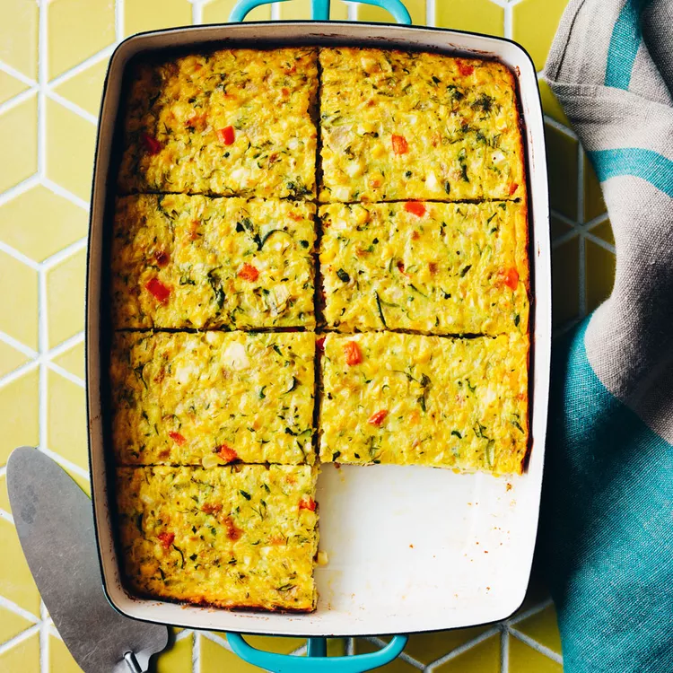

Zucchini Corn Egg Casserole

Description
This healthy casserole is essentially a crustless quiche, brimming with fresh summer vegetables. Bake it up for an elegant summer brunch or a casual backyard barbecue.
- 1 ½ tablespoons extra-virgin olive oil
- 5 cups shredded zucchini and/or summer squash (about 3 medium)
- 2 tablespoons butter
- 1 cup finely chopped onion
- Pinch of salt, plus 1/4 teaspoon, divided
- 1 ½ cups corn kernels, fresh or frozen (thawed)
- 1 ¼ cups no-salt-added cottage cheese (see Tips)
- 1 cup crumbled feta cheese
- ½ cup chopped red bell pepper
- ¼ cup chopped fresh dill
- 2 tablespoons all-purpose flour
- 1 teaspoon baking powder
- ¼ teaspoon ground pepper
- 10 large eggs, lightly beaten
Steps
- Preheat oven to 350 degrees F.
- Coat a 9-by-13-inch baking dish (or similar-size 3-quart baking dish) with cooking spray.
- Place squash on a clean kitchen towel, gather up the edges and squeeze out excess moisture.
- Heat butter in a large skillet over medium heat.
- Add onion and cook, stirring occasionally, until golden brown, 5 to 8 minutes.
- Add the squash and a pinch of salt; cook until very soft and dry; about 4 minutes more.
- Transfer the squash mixture to a large bowl.
- Add corn, cottage cheese, feta, bell pepper, dill, flour, baking powder, pepper and the remaining 1/4 teaspoon salt and stir until well combined.
- Stir in eggs. Pour the mixture into the prepared baking dish.
- Bake the casserole until the center is set and the edges are lightly browned, about 40 minutes. Let stand 10 minutes before serving.
Home Page